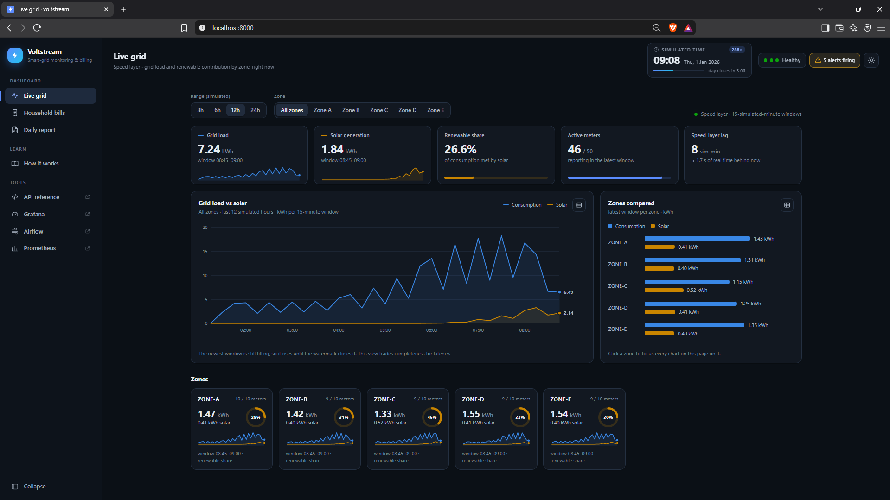
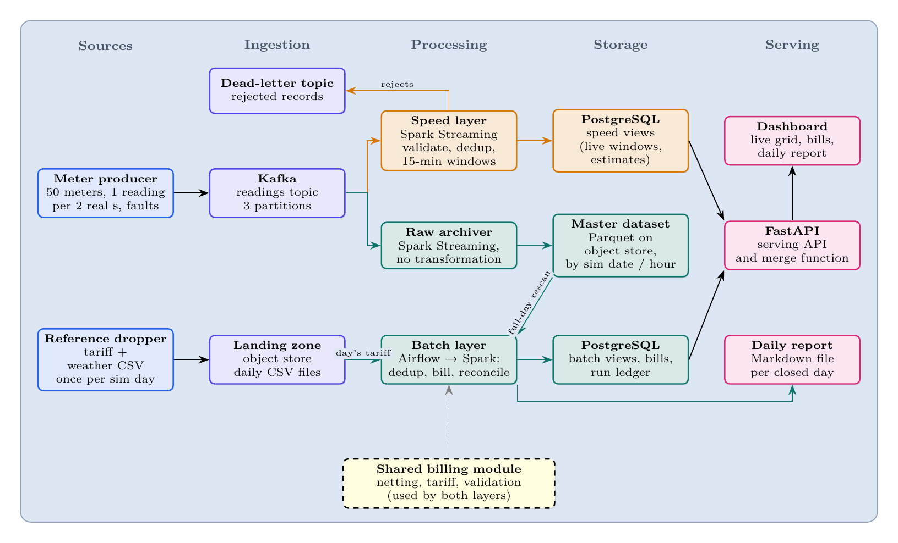
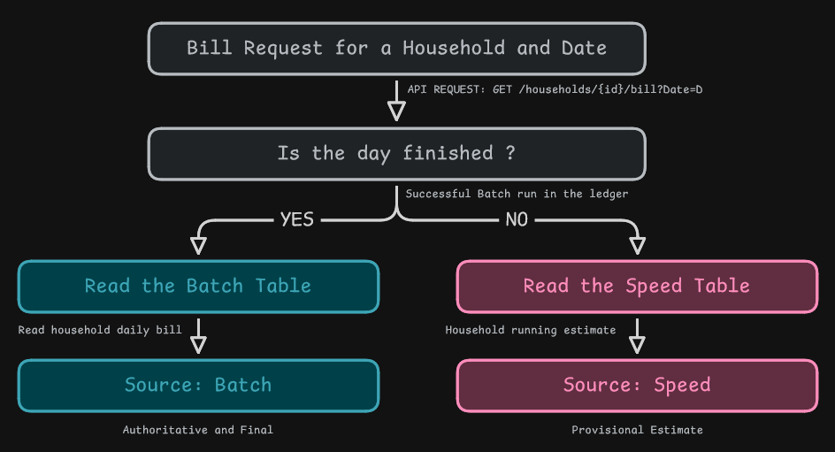
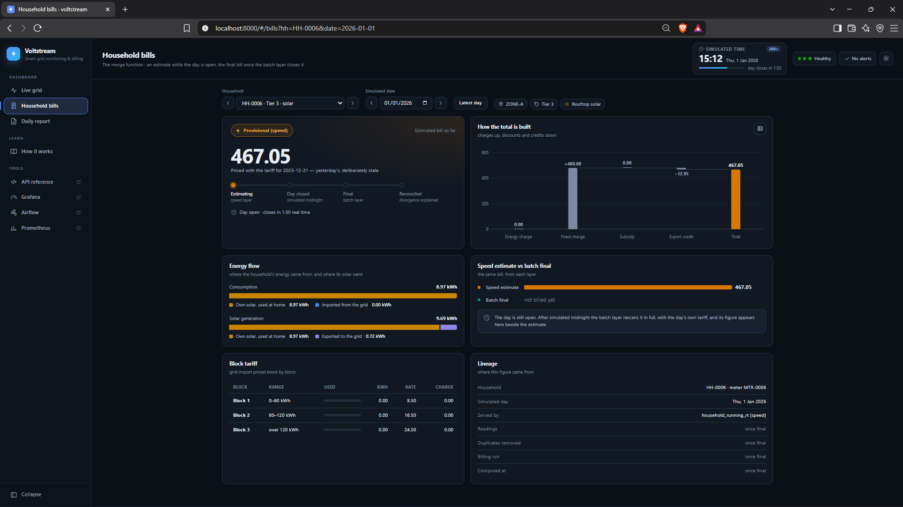
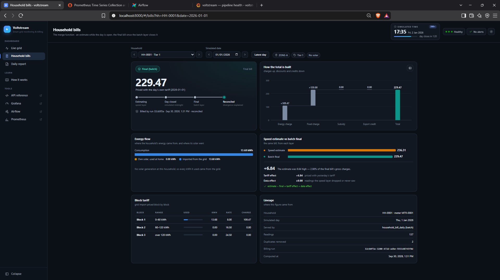
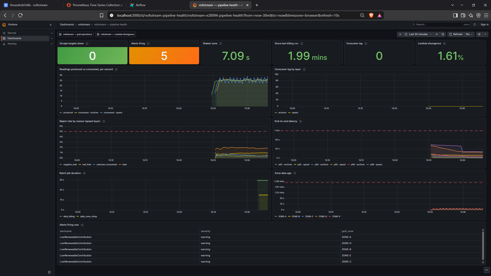
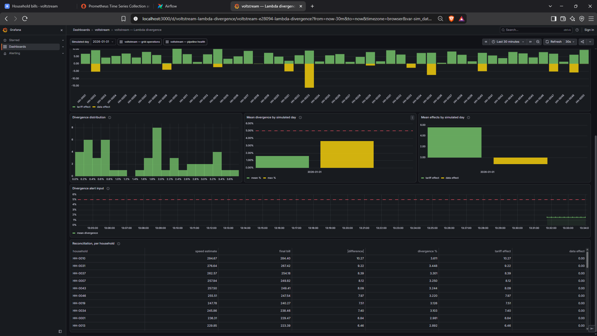

Overview
Voltstream is the data platform my team of three built for the Smart Grid Energy Monitoring and Billing use case in our Big Data Analytics module. Fifty simulated households send electricity use and rooftop-solar readings every two seconds, and a tariff file arrives once per simulated day. From that, the platform produces a live view of grid load and renewable share for each of five zones, a final bill for every household for every day, a daily report, and alerts when something goes wrong in the grid or in the pipeline itself.
The same readings serve two users with conflicting needs, and that conflict decided the architecture. The whole system, eighteen containers, starts with one command on a laptop, and every number on this page was measured on that running system.
- 6.3 smean delay from a meter reading to the live dashboard (target: under 60 s)
- 59 sto bill a complete day for all 50 households
- 0readings lost when either streaming job was killed mid-run
- 1.9%mean gap between the live estimate and the final bill, about 90% of it explained by the tariff

The problem
A power grid has to balance supply and demand at every moment. Rooftop solar makes that harder because the utility cannot control it: when a cloud passes over a zone, solar output can fall within a minute, and slower power stations have to make up the difference. Operators therefore need each zone's load and renewable contribution right now, and the information is only useful if it arrives quickly.
The billing department works from the same readings but needs something else. A bill combines block tariffs (the price per kWh rises as usage crosses thresholds), a fixed charge that depends on the household's tier, a subsidy discount, and a credit for solar energy exported to the grid. It is also priced with that day's tariff, which is not published until the day has ended.
The brief posed one question in two halves: what is the grid load and renewable contribution in each zone right now, and what will each household's bill be once the daily tariff is applied? Side by side, the two halves pull in opposite directions.
| Grid operations | Billing | |
|---|---|---|
| Question | Load and renewable mix by zone | A household's bill for the day |
| How fast | Seconds | After the day closes |
| A 2% error | Harmless; operators would act the same way | Legally actionable |
| Late readings | Can be ignored | Must be included |
| Recalculating a past day | Never | Months later, when a bill is disputed |
| Audit trail | Not needed | Every bill traceable to its readings |
Requirements
We turned the brief into five functional requirements:
- Ingest a continuous stream of meter readings, plus one tariff file and one weather file per simulated day.
- Keep every raw reading permanently and unchanged, so any result can be recalculated.
- Calculate each zone's load and renewable contribution over short time windows.
- Compute a daily bill for each household, with solar netting, block tariffs, fixed charges, subsidy and export credit.
- Provide a live dashboard, a daily report, and alerts when values cross a threshold.
We also set six non-functional requirements, each with a number we could test against:
| ID | Requirement | Why |
|---|---|---|
| N1 | Live view less than 60 s behind the meters | Operators must be able to react within a minute |
| N2 | Each closed day billed within 10 real minutes | It has to fit into a live demonstration |
| N3 | No data lost when any single component fails | Readings are money |
| N4 | Any past day can be re-billed at any time | Disputes arrive long after the data |
| N5 | Runs from a clean clone with one command | The markers had to be able to reproduce every result |
| N6 | Every stage of the pipeline observable | A failure nobody can see is the worst kind |
Architecture
Lambda or Kappa?
There are two standard shapes for a system like this. Lambda processes the same data along two paths: a speed layer computes approximate results from recent data as it arrives, a batch layer periodically recomputes exact results from all the stored data, and a serving layer combines the two. Kappa uses a single streaming path and fixes mistakes by replaying old data from the message log through the same code.
We compared them on the four criteria the brief named:
| Criterion | What we found | Favours |
|---|---|---|
| Latency | Operations need seconds and billing needs hours. A single path can be tuned for only one of them: if it waits for late data the live view lags, and if it doesn't the bills are wrong. | Lambda |
| Replay | Disputes and tariff corrections can arrive months later, but Kafka keeps messages for days. Kappa corrects results by re-reading the log, and the log has expired by the time billing needs it. | Lambda |
| Cost | Lambda pays for two code paths and a nightly burst of compute. Kappa pays for very long retention or months of per-household state. At our scale both are cheap. | Lambda, narrowly |
| Consistency | A financial audit trail should not depend on a message broker's retention setting. Lambda keeps a permanent copy of every raw reading. | Lambda, decisively |
How the pieces fit

A simulated meter producer publishes readings to Kafka, keyed by household so that each household's readings stay in order. A reference dropper writes each day's tariff and weather files to a landing zone on object storage. Two independent Spark streaming jobs read the same Kafka topic, each keeping track of its own position:
- The raw archiver writes every message to Parquet on object storage, unchanged and organised by simulated date and hour. This is the master dataset. Nothing in it is ever modified or filtered out, so any bug can be fixed later by recalculating from it.
- The speed layer validates readings, removes duplicates, and groups them into 15-minute (simulated) windows for each zone. It also keeps a running provisional bill for each household, priced with yesterday's tariff because today's does not exist yet. Invalid readings go to a dead-letter topic along with the reason they were rejected.
When a day's tariff file lands, Airflow starts the batch layer: a Spark job that reads the whole day back from Parquet, validates and deduplicates it, joins that day's tariff and writes the final bills. Speed and batch results go to separate PostgreSQL tables, so neither layer overwrites the other and every row records which layer wrote it. A FastAPI service reads both and serves the dashboard, the bills and the daily report.
The merge function
For every bill request, the serving layer has one decision to make: has the batch layer finished this day?

The batch bill always takes priority because it includes the late readings the speed layer missed and uses the correct tariff. Every response states which layer produced it and which day's tariff priced it, so the dashboard shows a clear Provisional or Final badge instead of silently swapping one number for another.
How it was built
Technology choices
Each technology had to meet a specific constraint, and for each one we recorded what we rejected and why.
| Layer | Chosen | Why | Rejected |
|---|---|---|---|
| Ingestion | Apache Kafka (KRaft) | A log rather than a queue: reading a message doesn't delete it, so two consumers can read independently and data can be replayed | RabbitMQ, which deletes on read |
| Processing | Spark Structured Streaming and batch | One API for both layers, which is what makes a shared billing module possible; built-in event-time windows | Storm (no event-time windows or batch API); Flink (harder to share batch code in Python) |
| Master dataset | Parquet on S3-compatible object storage | Compressed, typed and columnar; a full day can be re-read quickly; storage is separate from compute | HDFS (too heavy at this size); raw CSV or JSON |
| Serving store | PostgreSQL 16 | Joins, and transactions so a billing run is saved completely or not at all; our aggregated data is small | Cassandra (no joins, built for far higher write volumes) |
| Orchestration | Apache Airflow 3 | Sensors, retries, run history, and re-running a single day | cron |
| Observability | Prometheus, Alertmanager, Grafana | Alert rules live in the repository and are tested like code | Custom log parsing |
| Serving API | FastAPI | Validates every request and generates its own API docs | Flask |
| Deployment | Docker Compose | The whole system from one command, with no cloud account | Kubernetes |
Two choices paid off in ways we had not planned. Because the pipeline only speaks the standard S3 interface, when MinIO stopped publishing its images mid-project we switched to a MinIO-compatible replacement by changing two image lines and no code. And because Airflow schedules by real time, "once per simulated day" could not be an ordinary schedule; instead a small watcher workflow checks the landing zone every real minute and starts one billing run per new tariff file, named after the file's date so the same day is never billed twice by accident.
Ingestion, with faults on purpose
A pipeline that has only ever seen clean data hasn't really been tested. The producer deliberately injects faults at configurable rates: duplicate readings (2%), out-of-order readings (3%), missing fields (1%), negative values, unknown households, and meter dropouts, where a meter loses its connection, buffers its readings and sends them all late when it reconnects. Every rejected reading goes to a dead-letter topic and is recorded in a table with the reason. A test checks that when every fault rate is zero, the output is identical to the input.
Each reading also carries a trace ID from the moment it is produced. The ID travels through Kafka into Parquet, the dead-letter topic and every log line, so a search for one ID shows a reading's full path through the system.
Keeping two layers honest
Lambda's known weakness is that the same logic lives in two places and can quietly drift apart. If the speed layer ended the first tariff block at 60 kWh and the batch layer ended it at 61, households near the boundary would get two different bills and nothing would flag it.
Our answer was to put every billing rule (solar netting, block tariffs, rounding, validation and the deduplication key) in one shared module that both layers import. Solar is netted before pricing: a household uses its own solar first, imports the rest from the grid and exports any surplus. The bill is then the energy charge plus the fixed charge, minus the subsidy and the export credit.
Getting the money exactly right took a few explicit rules, each recorded in the decision log:
- Exact decimals, never floating point. In floating point, 60.01 kWh priced at 480.16 instead of 480.17, and both floating-point implementations agreed with each other, so a consistency test would have passed on wrong bills. Floating-point sums also depend on the order of addition, which Spark does not fix, so re-running a day could change a bill in its last digit. Decimal arithmetic avoids both problems.
- Round half-up on each line item, and make the total the sum of the rounded lines, so a customer who adds up their bill gets the printed total.
- Allow negative bills. A household that exports more than it uses is owed money, and clamping its bill to zero would throw that away.
The rules still exist in two forms, because Spark needs its own column expressions while plain Python is used for reconciliation and as the test reference. A consistency test runs both forms on 5,000 random inputs and on values either side of every block boundary, and checks that they agree to the cent. CI requires full test coverage of the shared module on every push.
The batch day
- Wait for the tariffa sensor watches the landing zone for the day's file
- Grace period90 real seconds for late readings to reach Parquet
- Bill the daySpark rescans the whole day, deduplicates, joins the tariff and records the run
- Verifyone bill per household, and every bill adds up
- Roll up and reconcileexact zone totals, the speed-versus-batch gap and the daily report
Re-billing a day is just another run of the same workflow for the same date. Earlier runs are marked as superseded in the run ledger, and an append-only history table keeps every version of every bill, so bills are always recalculated from the raw data and never edited in place.
Explaining the gap
The provisional bill is always going to differ from the final one, and an unexplained difference is no use to anyone reading a dashboard. Reconciliation splits each household's gap into two parts that always add up to the whole:
- the tariff effect, the part caused by pricing with yesterday's tariff, found by re-pricing the speed layer's energy at today's rates;
- the data effect, the remainder, caused by readings the speed layer never counted, such as a meter's buffered readings arriving too late.
The mean gap is exported as a metric with its own alert, so the two layers drifting apart is something the system watches rather than something someone eventually notices.
Observability
Good observability tells an operator three things: whether data is flowing, whether it is correct, and, if not, where it is stuck. Every service writes its log as one JSON object per line with the same fields (service, pipeline stage, trace ID, simulated date). Ten metrics cover readings produced and consumed, rejections by reason, consumer lag, end-to-end latency, batch duration, renewable ratio and the speed-versus-batch divergence. Prometheus scrapes the long-running services every 15 seconds, and the short-lived batch containers push their metrics as they exit.
Two questions could not be answered from application metrics at all. "Has this zone stopped reporting?" can't be read from the renewable ratio, because the ratio is zero every night and an unchanging zero looks exactly like a dead feed. And only the run ledger knows when billing last succeeded. A small SQL exporter turns those two database facts into metrics.
Five alert rules sit on top. They are stored in the repository and tested with
promtool, and another test fails if their thresholds drift away from the configuration.
| Alert | Fires when |
|---|---|
| Low renewable contribution | A zone's renewable share stays below 15% for three windows (the alert the brief asked for) |
| Meter data stale | A zone's newest window is more than 2 real minutes old |
| High reject rate | More than 5% of readings are rejected over 5 minutes |
| Batch SLA miss | No successful billing within 10 real minutes of a day closing |
| Lambda divergence high | The mean speed-versus-batch gap is above 5% |
Alertmanager suppresses a zone's low-renewable alert while that zone's data is stale, because missing data would explain the missing solar. Three Grafana dashboards cover pipeline health, grid operations and Lambda divergence.
One command to run it
Eighteen containers start in four tiers, each waiting until the previous tier reports healthy: infrastructure (Kafka, PostgreSQL, object storage), one-off bootstrap jobs that create the topics, tables and buckets, the application services, and finally orchestration and observability. One script builds, starts and verifies everything, and further commands run each demonstration: the provisional-to-final switch, the five alert drills, a crash test and a re-bill. The running system uses between 5.3 and 6.4 GiB of memory.
Results
Everything below was measured on the complete system running under Docker Compose on one Windows laptop. The system's own end-to-end check reported 37 checks passed and none failed.
Against the requirements
| ID | Requirement | Measured |
|---|---|---|
| N1 | Live view less than 60 s behind | Mean 6.3 s, 95th percentile 14.3 s; none of about 2,300 readings took longer than 60 s |
| N2 | Closed day billed within 10 minutes | The eight-task workflow ran in 59 s; bills were final about 2.5 minutes after the day closed |
| N3 | No data lost on a single failure | No readings lost after killing either streaming job |
| N4 | Any past day can be re-billed | A day re-billed from Parquet, with every earlier version kept |
| N5 | One command from a clean clone | One command starts and verifies all 18 containers |
| N6 | Every stage observable | 10 metrics, 5 alerts, 3 dashboards; four alerts fired under live faults, the fifth with a lowered threshold |
API reads came back in about 15 ms for zone data and 9 ms for a bill, at the median.
From provisional to final
We requested one household's bill for the first complete day at three moments.
| Mid-day | At day close | After batch billing | |
|---|---|---|---|
| Served by | speed layer (provisional) | speed layer (provisional) | batch layer (final) |
| Tariff used | previous day's | previous day's | that day's |
| Total | 200.53 | 227.49 | 234.21 |
The final bill was 2.9% higher than the estimate at close, and almost all of the difference came from the tariff: the new day's prices were higher than the ones the speed layer had used. The batch layer billed 138 readings for that household after removing 3 duplicates.


Where the gap comes from
Averaged over all 50 households, the gap between estimate and final bill was 1.6% on the first day and 1.9% on the second, well under the 5% alert threshold, and the tariff caused 85 to 90% of it. The tariff effect appeared for every household and changed sign each day as prices moved up and down. The data effect appeared for only 10 to 12 households a day: exactly the ones whose meters had dropped out and sent their readings late.
One result surprised us. The live 15-minute view was missing 1.16% of each day's energy. We expected most of that to come from meter dropouts, but with dropouts switched off it was still 1.00%, so most of it was ordinary reordering, which the 30-minute watermark (how long the speed layer waits for late readings) was supposed to absorb. The cause was the faster clock. Spark moves the watermark forward once per micro-batch, and each 10-second micro-batch covers 48 simulated minutes, so a watermark shorter than one batch does almost nothing. We kept this finding rather than quietly retuning the number, because it shows the cost of time compression with data instead of just asserting it.
Failure and recovery
- Archiver killed for 20 s: no readings were lost and there were no gaps. On restart it re-read a small range, producing 334 duplicates among 14,012 rows, which the batch layer removed.
- Speed layer killed for 60 s: the live view fell 56 s behind while the archiver kept storing readings. After restarting, the speed layer caught up in 22 s, and no bill changed.
- Re-billing a corrupted day: a script corrupted one day's tariff, re-billed the day, restored the file and re-billed it again. The day's total went from 18,737.41 to 44,876.57 and back to exactly 18,737.41, and all three runs and every version of every bill were kept.
Alerts under fire
Each alert was tested by causing the fault it watches for:
- Stopping the producer fired the stale data alert for all five zones within about three minutes, and it cleared within 46 s of the restart.
- Injecting 15% missing fields fired the high reject rate alert after 119 s, at an 11.6% reject rate against about 2% normally.
- Pausing the billing workflow fired the batch SLA alert 21 s after billing was due.
- The low renewable alert needed no help: it fired at dusk every simulated day and cleared mid-morning.
- The divergence alert never crossed 5% in a live run, because the real gap stayed under 2% and an attempt to force it ran out of memory on the laptop. We showed it firing by lowering the threshold to 1%.
Rejected readings were fully traceable: the 53 rows in the rejects table matched the 53 messages in the dead-letter topic one for one, with the same trace IDs.


Limitations and the road to production
- The faster clock distorts streaming timings. Simulated time speeds up but processing time doesn't, which is why the trigger interval outgrew the watermark. A watermark longer than one trigger interval would close the live view's 1% gap.
- Synthetic, small data. Fifty households, generated consumption and tariffs, and a weather file that is produced but not used.
- Small files. One simulated day produced 245 Parquet files averaging 10 kB each, far smaller than Parquet works best with.
- Single points of failure. One Kafka broker, one Spark node, one PostgreSQL server, and no schema registry.
- Monitoring blind spots. If the SQL exporter stops, two alerts go quiet instead of firing.
At production scale we would put Apache Iceberg or Delta Lake over the raw Parquet (transactions, automatic compaction of small files, access to past versions), add a schema registry, replace the daily tariff files with change data capture, replicate Kafka, run Spark on Kubernetes, and size watermarks from measured delays. PostgreSQL is enough for up to a few million summary rows a day; beyond that a columnar database such as ClickHouse would fit better. And if Iceberg or Kafka tiered storage made the log's history unlimited and queryable, the reason we chose Lambda would disappear, and Kappa would become the better design.
What I learned
- Write decisions down along with the options you rejected. I kept a decision log of nine entries, each with its context, options, decision and consequences. It was most useful when a decision turned out to be wrong: the watermark entry recorded a prediction, the measurement contradicted it, and the log let us correct it in place with the reasoning intact, instead of leaving the docs and the code quietly disagreeing.
- Measure instead of assuming. My latency budget gave the watermark about 30 s of the delay; its measured share was zero, because results are published after every micro-batch, and the trigger interval was the real cost. Several of the most useful findings in this project were numbers that contradicted the design.
- Two checks that agree can share a blind spot. In review we found that the speed layer counted duplicates the batch layer removed, and that the test comparing them used an archive that had not been deduplicated either, so a 0.00% gap was two omissions agreeing. We also found that the daily tariff change only touched a price no household ever reached, so the stale-tariff gap the whole demonstration relied on was zero everywhere. I now check that a demo can actually show the effect it is meant to show before trusting a clean result.
- Lambda's cost is real but can be contained. Because both layers shared one billing module, every difference between them came from their inputs and never from their logic, and turning that difference into a metric made it something the system watches.
- A silent alert is not the same as a healthy system. The renewable ratio is zero every night, so it cannot tell you a feed has died. Monitoring has to read facts from where they actually live, and it is worth asking what happens when the monitor itself stops.
- What I would do differently: set the watermark above the trigger interval from the start, use a table format such as Iceberg from day one to avoid the small-files problem, and size the tariff blocks to daily usage. As built, no simulated household uses enough in a day to reach the second price block, so tiered pricing is proven by the tests but never shown in the live demo.